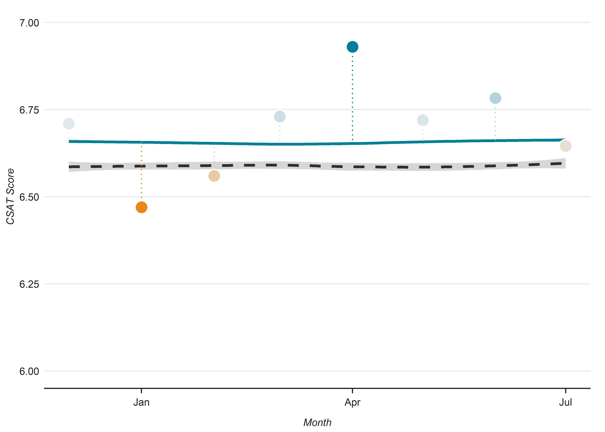

Points of excellence
Highland Hills has 3 items in Phase 1, 8 items in Phase 2 that need improvement.
Here are some goals to focus on:
- utilize a rolling cart in each room
- offer padded or gel chairs for comfort
- display the current WIC logo at or above the entrance
- utilize alternative lighting options
- display three or more wall hangings in each room